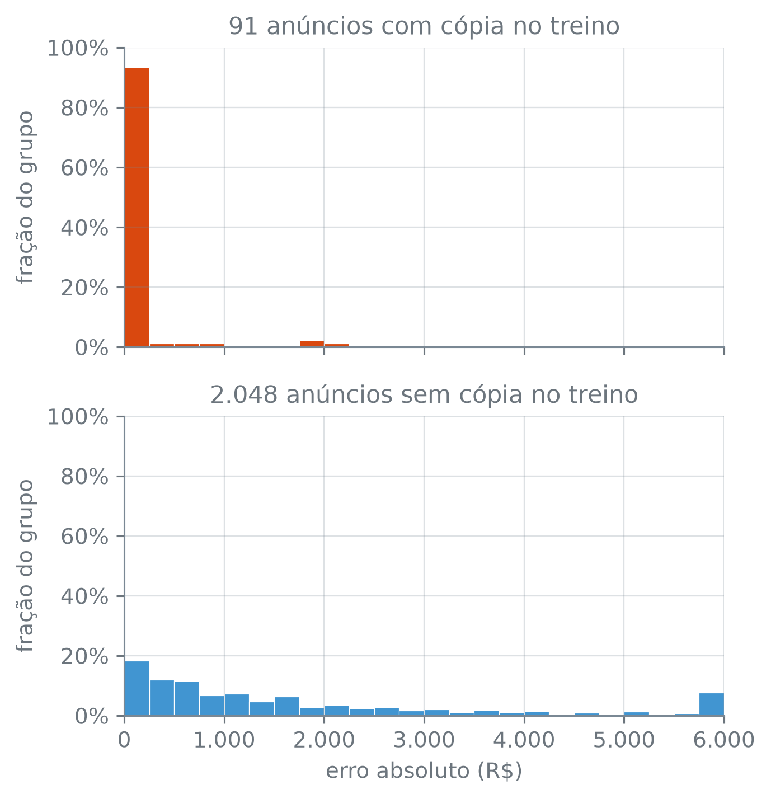
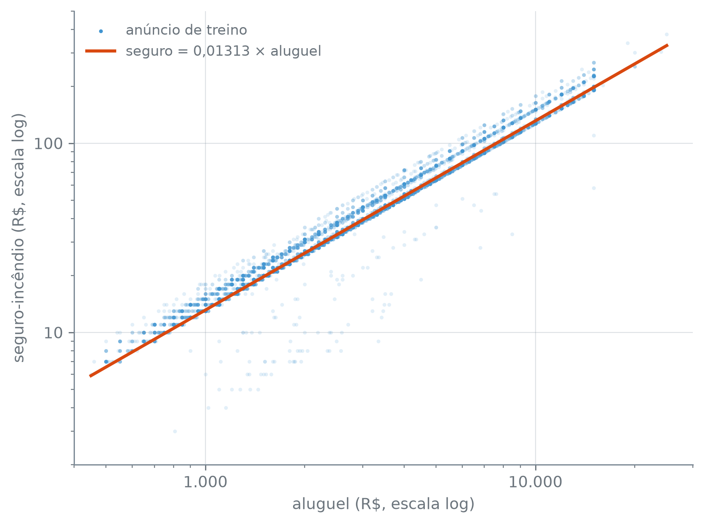
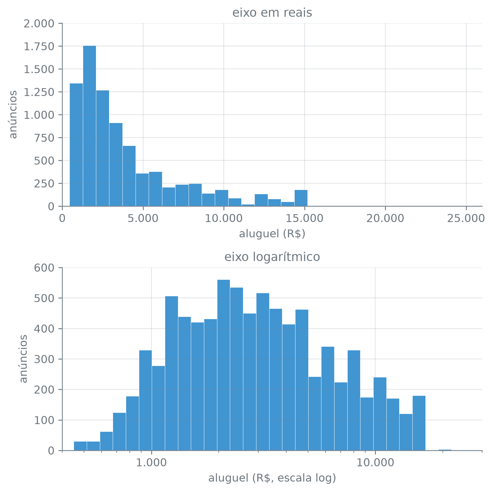

numero_br = lambda valor, casas=2: (
f"{valor:,.{casas}f}".replace(",", "_").replace(".", ",").replace("_", ".")
.replace("-", "−")
)Separar antes de Olhar: Treino, Teste e Vazamento
Quanto o modelo vai errar num anúncio que ainda não existe? A única forma de medir isso antes de o anúncio chegar é guardar uma parte dos anúncios que já existem e fingir que eles são novos: nenhuma decisão sobre o modelo pode tê-los visto. A pergunta difícil é o que conta como “ver”.
Três tipos de decisão sobre o dado
Padronizar area_m2 é subtrair uma média e dividir por um desvio padrão. Se os dois números forem calculados na tabela inteira, os anúncios de teste entraram na conta: quando chegar a vez deles, serão julgados por um modelo que já recebeu algo deles. Se os dois números forem calculados só nos anúncios de treino, o teste é padronizado com eles, como um anúncio novo seria.
Deixar o teste entrar assim é vazamento: uma decisão sobre o modelo tomada com informação que um anúncio novo não teria, seja a resposta, seja as linhas do teste. A padronização ajustada na tabela inteira vaza pelas linhas do teste, com a média e o desvio dos preditores dele, sem olhar a resposta; a escolha das colunas mais correlacionadas com a resposta, feita na tabela inteira, vaza pela própria resposta do teste. A seção 10.6 mediu os dois vazamentos na validação cruzada, e a seção 17.3 evita os dois pondo o preparo dentro do modelo.
A média e o desvio são decisões estimadas: saem de uma conta sobre as linhas, e mudam se as linhas mudarem. Também são estimadas o valor que preenche um nulo, o limiar de valor extremo definido por um quantil e a escolha das colunas mais correlacionadas com a resposta. Outras decisões olham uma linha de cada vez. Tirar dos preditores uma coluna calculada a partir da resposta, ou declarar que o traço de andar é nulo, vale igual para a tabela toda e para um anúncio que chegar amanhã.
Tirar as linhas que repetem outra linha inteira fica entre os dois casos. Não estima número nenhum, mas só se sabe que uma linha é repetida comparando-a com as outras.
Cada tipo de decisão tem o seu lugar em relação à divisão:
- a regra por linha decide cada linha pelos valores dela, e pode vir antes ou depois;
- tirar repetições compara as linhas entre si e vem antes; a subseção seguinte mostra por quê;
- a decisão estimada vem depois: é calculada só no treino e aplicada ao teste com os mesmos números.
Olhar também é uma decisão estimada, só que feita a olho. Examinar a distribuição de aluguel na tabela inteira e escolher uma transformação pelo que se viu deixa os anúncios de teste influírem nessa escolha. Por isso a resposta só é examinada depois da divisão, e só no treino.
Linhas repetidas atravessam a divisão
O arquivo tem linhas que repetem outra linha inteira. Se ele for dividido assim, uma cópia pode cair no treino e a outra no teste. Os números impressos adiante usam a função numero_br da seção 17.1, que escreve um número com a pontuação brasileira:
A divisão abaixo separa 20% dos anúncios para o teste, sem tirar as repetições antes:
com_repeticao = pd.read_csv("dados/alugueis.csv", na_values=["-"])
treino_r, teste_r = train_test_split(
com_repeticao, test_size=0.2, random_state=17,
stratify=com_repeticao["cidade"],
)
print("linhas repetidas:", com_repeticao.duplicated().sum())
print("treino:", numero_br(len(treino_r), 0))
print("teste:", numero_br(len(teste_r), 0))linhas repetidas: 358
treino: 8.553
teste: 2.139train_test_split(tabela, test_size, random_state, stratify) — sorteia as linhas da tabela em duas partes e devolve primeiro a de treino, depois a de teste. test_size=0.2 põe 20% das linhas no teste; random_state=17 fixa o sorteio, e a divisão sai igual a cada execução; stratify é explicado adiante, em “A divisão”.
São 358 linhas repetidas, e a divisão põe 8.553 anúncios no treino e 2.139 no teste. Quantos anúncios do teste têm uma cópia idêntica no treino? Um merge casa cada linha do teste com as linhas do treino que têm os mesmos valores em todas as colunas:
cruzamento = teste_r.merge(treino_r.drop_duplicates(), how="left", indicator=True)
assert len(cruzamento) == len(teste_r)
tem_copia = (cruzamento["_merge"] == "both").to_numpy()
print("com cópia no treino:", tem_copia.sum(), "de", numero_br(len(teste_r), 0))com cópia no treino: 91 de 2.139df.merge(outra, how, indicator) — junta duas tabelas pelas colunas que elas têm em comum, aqui todas. Com how="left", toda linha de df aparece no resultado, na mesma ordem, tenha par em outra ou não. Com indicator=True, a coluna _merge diz de onde veio cada linha: "both" quando houve par, "left_only" quando não houve.
df.drop_duplicates() — a tabela sem as linhas que repetem uma linha anterior. Aqui, no treino, para que um anúncio com duas cópias no treino não apareça duas vezes no resultado do merge; o assert confere que o resultado tem uma linha por anúncio de teste.
serie.to_numpy() — os valores da Series como um array do numpy, sem os rótulos das linhas.
São 91 dos 2.139 anúncios de teste com uma cópia exata no treino. Para um modelo que decora o treino, esses 91 não são anúncios novos. O k-NN da seção 7.3 com um vizinho só é esse modelo: prevê para cada anúncio o aluguel do anúncio de treino mais parecido. Antes de ver o resultado, pense: o que ele prevê para um anúncio de teste que tem uma cópia no treino?
O chunk abaixo usa as seis colunas numéricas sem nulo (andar fica de fora porque o k-NN não aceita nulo), sem padronizar: para uma cópia exata, a distância é zero em qualquer escala. Ele mede o erro absoluto, em reais, de cada anúncio de teste:
numericas = ["area_m2", "quartos", "banheiros", "vagas", "condominio", "iptu"]
um_vizinho = KNeighborsRegressor(n_neighbors=1)
um_vizinho.fit(treino_r[numericas], treino_r["aluguel"])
erro = (um_vizinho.predict(teste_r[numericas]) - teste_r["aluguel"]).abs()
print("erro mediano, cópias: R$", numero_br(erro[tem_copia].median(), 0))
print("erro mediano, demais: R$", numero_br(erro[~tem_copia].median(), 0))
print("erro zero em todas as cópias:", (erro[tem_copia] == 0).all())erro mediano, cópias: R$ 0
erro mediano, demais: R$ 1.000
erro zero em todas as cópias: FalseKNeighborsRegressor(n_neighbors) — o k-NN para resposta numérica: prevê a média da resposta dos n_neighbors anúncios de treino mais próximos. Com n_neighbors=1, o aluguel do mais próximo.
modelo.fit(X, y) e modelo.predict(X) — fit ajusta o modelo às colunas X e à resposta y do treino; predict devolve a previsão para cada linha de outra tabela com as mesmas colunas.
serie.all() — True se todos os elementos de uma Series de True/False são True.
Nas cópias, o erro mediano é zero: o vizinho mais próximo está à distância zero, e é a cópia do anúncio no treino. Nos demais anúncios de teste, o erro mediano é de R$ 1.000. A figura compara o erro nos dois grupos de anúncios de teste:
bordas_erro = np.arange(0, 6_001, 250)
em_br = lambda v, pos: numero_br(v, 0)
em_pct = lambda v, pos: numero_br(100 * v, 0) + "%"
grupos = [
(erro[tem_copia], "C1", "com cópia no treino"),
(erro[~tem_copia], "C0", "sem cópia no treino"),
]
fig, eixos = plt.subplots(2, 1, figsize=(5, 5.2), sharex=True, sharey=True)
for ax, (grupo, cor, nome) in zip(eixos, grupos):
ax.hist(grupo.clip(upper=5_999), bins=bordas_erro,
weights=np.full(len(grupo), 1 / len(grupo)),
color=cor, edgecolor="white", linewidth=0.3)
ax.set_title(f"{numero_br(len(grupo), 0)} anúncios {nome}")
ax.set_ylabel("fração do grupo")
ax.yaxis.set_major_formatter(em_pct)
eixos[1].set_xlim(0, 6_000)
eixos[1].xaxis.set_major_formatter(em_br)
eixos[1].set_xlabel("erro absoluto (R$)")
plt.tight_layout()
plt.show()
np.arange(inicio, fim, passo) — os números de inicio até antes de fim, de passo em passo. Aqui, as bordas das barras, de R$ 250 em R$ 250.
serie.clip(upper=valor) — troca todo valor acima de valor por valor; aqui, junta a cauda na última barra.
ax.hist(x, bins, weights) — com weights, cada valor soma o seu peso à barra em vez de 1. Com peso 1/n para os n anúncios do grupo, a altura da barra é a fração do grupo, e grupos de tamanhos diferentes ficam comparáveis.
plt.subplots(..., sharex=True, sharey=True) — faz os dois painéis dividirem os dois eixos, e a mesma altura quer dizer a mesma fração em cima e embaixo.
Nem todas as cópias acertam em cheio, e o booleano acima deu False: o treino tem anúncios iguais nas seis colunas numéricas e com aluguéis diferentes. Aí vários vizinhos empatam à distância zero, e qual deles ganha depende da ordem das linhas no treino e do algoritmo que o k-NN usa para buscar os vizinhos. Acertam qualquer que seja o desempate as cópias cujas seis colunas aparecem no treino com um aluguel só:
distintos = treino_r[numericas + ["aluguel"]].drop_duplicates()
unicos = distintos[~distintos.duplicated(numericas, keep=False)]
certas = len(teste_r[tem_copia].merge(unicos[numericas], on=numericas))
print("acerto garantido:", certas, "de", tem_copia.sum())
print("mais da metade:", certas > tem_copia.sum() / 2)acerto garantido: 71 de 91
mais da metade: Truedf.duplicated(colunas, keep=False) — compara as linhas só nas colunas; com keep=False, marca todas as linhas de um grupo repetido, e não só as que vêm depois da primeira. Aqui, as combinações das seis colunas que aparecem com mais de um aluguel.
df.merge(outra, on=colunas) — casa as linhas só pelas colunas; sem how, fica só com as linhas que têm par nas duas tabelas.
São 71 das 91 cópias com acerto garantido, mais da metade: o erro mediano zero não depende do desempate.
O erro mediano zero nas cópias mostra só que o modelo guardou o treino, e nada sobre o que ele aprendeu de aluguel. Essa divisão serve para mostrar o problema e é descartada aqui.
A saída é tirar as repetições antes de dividir. Feito depois, cada metade tira só as repetições que tem dentro de si:
alugueis = com_repeticao.drop_duplicates()
depois = len(treino_r.drop_duplicates()) + len(teste_r.drop_duplicates())
print("tirando antes de dividir:", numero_br(len(alugueis), 0))
print("tirando depois de dividir:", numero_br(depois, 0))tirando antes de dividir: 10.334
tirando depois de dividir: 10.414Antes de dividir, sobram 10.334 anúncios; depois, 10.414. A diferença, 80 (10.414 − 10.334), corresponde a linhas com cópia dos dois lados, que nenhuma das metades, olhada sozinha, reconhece como repetida. Continua valendo a ressalva da seção 6.4, que mostrou anúncios de Belo Horizonte idênticos até o último real: sem uma coluna que identifique o anúncio, não há como saber se uma repetição é o mesmo imóvel anunciado duas vezes ou dois imóveis iguais. Tirá-la supõe o primeiro caso.
A divisão
As cinco cidades não têm o mesmo número de anúncios, e um sorteio simples pode deixar a fração de uma cidade no teste diferente da fração dela no treino. O argumento stratify sorteia dentro de cada cidade, separando 20% de cada uma. Antes de ver a tabela, pense: se uma cidade tem poucos anúncios, o que um sorteio simples pode fazer com a fração dela no teste? A tabela compara a fração de cada cidade na tabela inteira e no teste, sem e com stratify:
treino_s, teste_s = train_test_split(alugueis, test_size=0.2, random_state=17)
treino, teste = train_test_split(
alugueis, test_size=0.2, random_state=17, stratify=alugueis["cidade"]
)
fracao = lambda tabela: tabela["cidade"].value_counts(normalize=True)
proporcoes = pd.DataFrame(
{"tabela": fracao(alugueis), "sem": fracao(teste_s), "com": fracao(teste)}
)
(
proporcoes.style.set_uuid("proporcoes")
.format(lambda v: numero_br(v, 3))
.set_table_styles([{"selector": "th, td", "props": "padding: 0.15em 0.3em"}])
)| tabela | sem | com | |
|---|---|---|---|
| cidade | |||
| São Paulo | 0,553 | 0,558 | 0,553 |
| Rio de Janeiro | 0,138 | 0,141 | 0,138 |
| Belo Horizonte | 0,117 | 0,111 | 0,117 |
| Porto Alegre | 0,112 | 0,110 | 0,112 |
| Campinas | 0,080 | 0,080 | 0,080 |
serie.value_counts(normalize=True) — com normalize=True, a fração de cada valor em vez da contagem.
diferenca_sem = (fracao(treino_s) - fracao(teste_s)).abs().max()
diferenca_com = (fracao(treino) - fracao(teste)).abs().max()
print("maior diferença treino × teste")
print(" sem stratify:", numero_br(diferenca_sem, 4))
print(" com stratify:", numero_br(diferenca_com, 4))
print("treino:", numero_br(len(treino), 0), "| teste:", numero_br(len(teste), 0))
menor = fracao(teste).index[-1]
print("teste em", menor + ":", (teste["cidade"] == menor).sum())maior diferença treino × teste
sem stratify: 0,0072
com stratify: 0,0003
treino: 8.267 | teste: 2.067
teste em Campinas: 165serie.index — os rótulos das linhas da Series. Na saída de value_counts, os rótulos são os valores contados, do mais frequente ao menos frequente, e .index[-1] é o último, o menos frequente.
Sem stratify, a fração de uma cidade no treino e no teste chega a diferir em 0,0072; com ele, a maior diferença é de 0,0003. Com cinco cidades e milhares de anúncios, o sorteio simples já sai perto; a diferença cresce quando uma categoria é rara ou a tabela é pequena, e aí estratificar faz diferença. A estratificação é por cidade porque a seção 17.6 mede o erro também cidade por cidade, e cada cidade precisa estar no teste na mesma fração que tem no treino. Campinas, a cidade com a menor fração no teste, tem 165 anúncios nele, e é com eles que o erro de Campinas vai ser medido.
Os 20% são uma escolha comum, e não uma regra. O teste precisa ser grande o bastante para que o erro medido nele oscile pouco, e cada anúncio que vai para o teste é um a menos para ajustar o modelo. A divisão que fica é a estratificada: 8.267 anúncios de treino e 2.067 de teste.
A partir daqui, o teste fica guardado. Daqui até a seção 17.5, nenhuma decisão é tomada olhando para ele, e ele é aberto uma vez, na seção 17.6, para medir o erro do modelo escolhido.
Colunas que contêm a resposta
Duas colunas só existem depois que o aluguel é fixado: total e seguro_incendio, que a seção 17.1 deixou fora dos preditores por isso. A exclusão vem do que as colunas são, não de uma conta sobre o dado. Para total, a relação é uma fórmula: a seção 6.6 conferiu que, na grande maioria das linhas, ele é exatamente a soma de aluguel, condomínio, IPTU e seguro-incêndio. Para o seguro, a relação não está escrita em lugar nenhum do arquivo. Se ele for calculado como uma fração do aluguel, a razão entre os dois deve ser quase a mesma em todos os anúncios. A medição abaixo só confirma a exclusão, e é feita no treino, porque usa aluguel, a resposta:
razao = treino["seguro_incendio"] / treino["aluguel"]
fator = razao.median()
q05, q95 = razao.quantile(0.05), razao.quantile(0.95)
print("razão mediana:", numero_br(fator, 5))
print("90% entre", numero_br(q05, 4), "e", numero_br(q95, 4))
previsto = treino["seguro_incendio"] / fator
erro_relativo = (previsto - treino["aluguel"]).abs() / treino["aluguel"]
print(f"erro relativo mediano: {numero_br(100 * erro_relativo.median(), 2)}%")
print(f"a menos de 10%: {numero_br(100 * (erro_relativo < 0.10).mean(), 1)}%")razão mediana: 0,01313
90% entre 0,0127 e 0,0160
erro relativo mediano: 2,96%
a menos de 10%: 67,6%serie.quantile(q) — o valor abaixo do qual fica a fração q dos dados. Os quantis 0,05 e 0,95 delimitam os 90% centrais.
serie.mean() — a média. Numa Series de True/False, é a fração de True.
A razão mediana é 0,01313, e 90% dos anúncios de treino têm razão entre 0,0127 e 0,0160. É um “modelo” com um número só: dividir o seguro por 0,01313 devolve o aluguel com erro relativo mediano de 2,96%, e 67,6% dos anúncios ficam a menos de 10% do aluguel verdadeiro. Não é uma fórmula exata, já que os outros 32,4% (100 − 67,6) passam dos 10%, mas é perto o bastante para o seguro entregar boa parte do aluguel. Um modelo que recebesse o seguro poderia aprender essa divisão, e o erro medido no teste, que também tem o seguro preenchido, deixaria de dizer quanto ele erra num anúncio novo. No anúncio novo, que ainda não tem preço, o seguro nem existe.
fig, ax = plt.subplots(figsize=(6.4, 4.8))
ax.scatter(treino["aluguel"], treino["seguro_incendio"],
s=6, alpha=0.15, color="C0", linewidths=0, label="anúncio de treino")
faixa = np.geomspace(treino["aluguel"].min(), treino["aluguel"].max(), 100)
ax.plot(faixa, fator * faixa, color="C1", linewidth=2,
label=f"seguro = {numero_br(fator, 5)} × aluguel")
ax.set_xscale("log")
ax.set_yscale("log")
ax.xaxis.set_major_formatter(em_br)
ax.yaxis.set_major_formatter(em_br)
ax.set_xlabel("aluguel (R$, escala log)")
ax.set_ylabel("seguro-incêndio (R$, escala log)")
ax.set_xlim(400, 30_000)
ax.set_ylim(2, 500)
legenda = ax.legend(loc="upper left")
legenda.legend_handles[0].set_alpha(1)
plt.tight_layout()
plt.show()
ax.scatter(..., alpha, linewidths) — alpha=0.15 deixa cada ponto quase transparente, e onde muitos se sobrepõem a cor fica mais forte; linewidths=0 tira o contorno dos pontos.
ax.plot(x, y, color, linewidth, label) — uma linha ligando os pontos (x, y); label é o texto dela na legenda.
ax.set_yscale("log") — põe o eixo vertical em escala logarítmica. Com os dois eixos em log, uma relação y = c × x vira uma reta de inclinação 1, qualquer que seja c.
ax.set_ylim(inicio, fim) — fixa o intervalo do eixo vertical.
ax.legend(loc) — desenha a legenda com os label de cada elemento; loc escolhe o canto. Os pontos têm transparência (alpha=0.15), e legenda.legend_handles[0].set_alpha(1) desenha o ponto da legenda opaco, para ele se ver.
A decisão é tirar as duas colunas. Os preditores são os dez que a seção 17.1 listou:
preditores = ["cidade", "area_m2", "quartos", "banheiros", "vagas", "andar",
"aceita_animal", "mobiliado", "condominio", "iptu"]
print("total entre os preditores:", "total" in preditores)
print("seguro entre os preditores:", "seguro_incendio" in preditores)total entre os preditores: False
seguro entre os preditores: FalseAgora, olhar o treino
Com o teste guardado, a distribuição de aluguel pode ser examinada, no treino. Uma pergunta antes: se a transformação fosse escolhida olhando o aluguel da tabela inteira, que anúncios estariam influindo numa decisão que o teste deveria julgar?
aluguel = treino["aluguel"]
print("mínimo: R$", numero_br(aluguel.min(), 0))
print("mediana: R$", numero_br(aluguel.median(), 0))
print("média: R$", numero_br(aluguel.mean(), 0))
print("máximo: R$", numero_br(aluguel.max(), 0))
print("assimetria em reais:", numero_br(aluguel.skew(), 2))
print("assimetria do log:", numero_br(np.log(aluguel).skew(), 2))mínimo: R$ 450
mediana: R$ 2.750
média: R$ 3.960
máximo: R$ 25.000
assimetria em reais: 1,64
assimetria do log: 0,21serie.skew() — a assimetria da coluna: perto de zero numa distribuição simétrica, positiva quando a cauda da direita é mais longa que a da esquerda.
np.log(x) — o logaritmo natural de cada elemento. Só existe para valores positivos.
A média, R$ 3.960, fica acima da mediana, R$ 2.750, o sinal de uma cauda longa à direita. A assimetria em reais é 1,64, e o logaritmo do aluguel tem assimetria de 0,21, bem mais perto de uma distribuição simétrica. A figura mostra as duas escalas:
fig, (ax_reais, ax_log) = plt.subplots(2, 1, figsize=(6.4, 6.4))
ax_reais.hist(aluguel, bins=30, color="C0", edgecolor="white", linewidth=0.3)
ax_reais.set_title("eixo em reais")
ax_reais.set_xlabel("aluguel (R$)")
ax_reais.set_xlim(0, 26_000)
bordas_log = np.geomspace(aluguel.min(), aluguel.max(), 31)
ax_log.hist(aluguel, bins=bordas_log, color="C0", edgecolor="white", linewidth=0.3)
ax_log.set_xscale("log")
ax_log.set_xlim(400, 30_000)
ax_log.set_title("eixo logarítmico")
ax_log.set_xlabel("aluguel (R$, escala log)")
for ax in (ax_reais, ax_log):
ax.xaxis.set_major_formatter(em_br)
ax.yaxis.set_major_formatter(em_br)
ax.set_ylabel("anúncios")
plt.tight_layout()
plt.show()
A barra mais alta de cada histograma:
contagens, bordas = np.histogram(aluguel, bins=30)
contagens_log, _ = np.histogram(aluguel, bins=bordas_log)
i, j = contagens.argmax(), contagens_log.argmax()
print("em reais: R$", numero_br(bordas[i], 0), "a", numero_br(bordas[i + 1], 0))
print("no log: R$", numero_br(bordas_log[j], 0), "a", numero_br(bordas_log[j + 1], 0))em reais: R$ 1.268 a 2.087
no log: R$ 1.963 a 2.244No eixo em reais, a barra mais alta fica bem à esquerda, de R$ 1.268 a R$ 2.087, e a cauda se estende até o máximo de R$ 25.000. No eixo log, a barra mais alta vai de R$ 1.963 a R$ 2.244.
A decisão é modelar o logaritmo do aluguel. O menor aluguel do treino é positivo, e o logaritmo existe para todos. Se uma característica do imóvel multiplica o preço (10% a mais, digamos) em vez de somar um valor fixo em reais, na escala log esse efeito vira uma soma, que é a forma com que a regressão linear combina os preditores. E o erro passa a ser relativo. Errar R$ 200 num aluguel de R$ 2.000 ou R$ 2.000 num de R$ 20.000 é errar 10% nos dois casos, e as duas diferenças são iguais na escala log:
print(numero_br(np.log(2_200) - np.log(2_000), 4))
print(numero_br(np.log(22_000) - np.log(20_000), 4))0,0953
0,0953As duas diferenças dão 0,0953, o logaritmo de 1,1. O preço dessa escolha é que a previsão sai em log, e dizer quanto o modelo erra em reais exige voltar da escala log, o que a seção 17.6 faz.
Com a decisão tomada, os preditores e a resposta do treino ficam assim:
y_treino = np.log(treino["aluguel"])
X_treino = treino[preditores]
print("X_treino:", X_treino.shape)
print("y_treino:", y_treino.shape)X_treino: (8267, 10)
y_treino: (8267,)O que fica decidido
Ao fim desta seção, o dado está neste estado, e é dele que o preparo e os modelos partem:
- a tabela sem as linhas repetidas, com 10.334 anúncios;
- a divisão estratificada por cidade, com
random_state=17: 8.267 anúncios de treino e 2.067 de teste, guardados até a seção 17.6; - os dez
preditores, semtotale semseguro_incendio; - a resposta
y_treino = np.log(treino["aluguel"]).
A seção 17.3 decide o que ainda falta: o nulo de andar, a escala das colunas assimétricas e a codificação de cidade, com tudo o que for estimado ajustado só no treino.